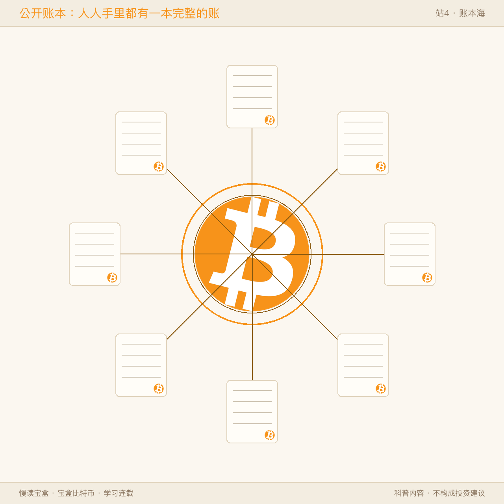
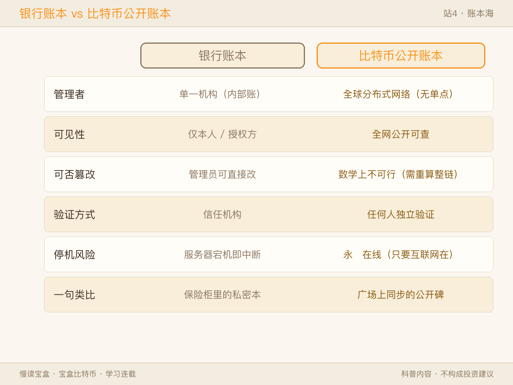
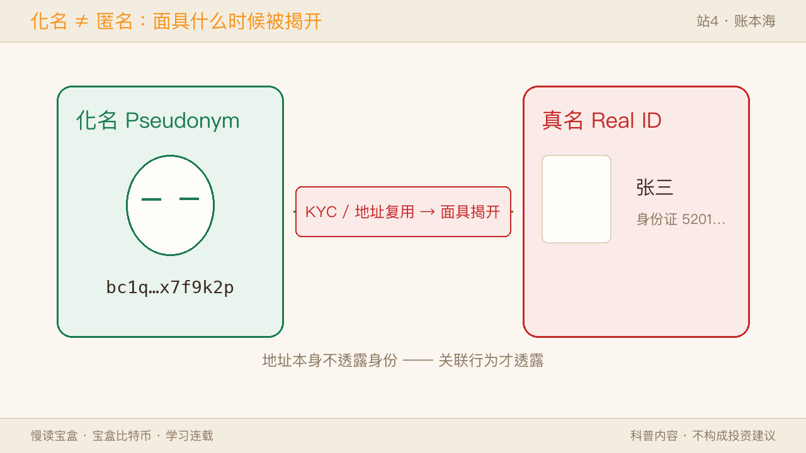
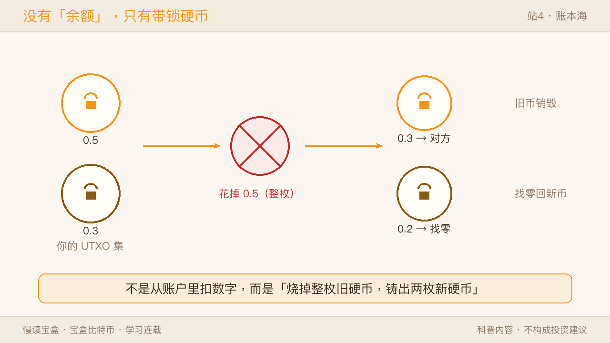
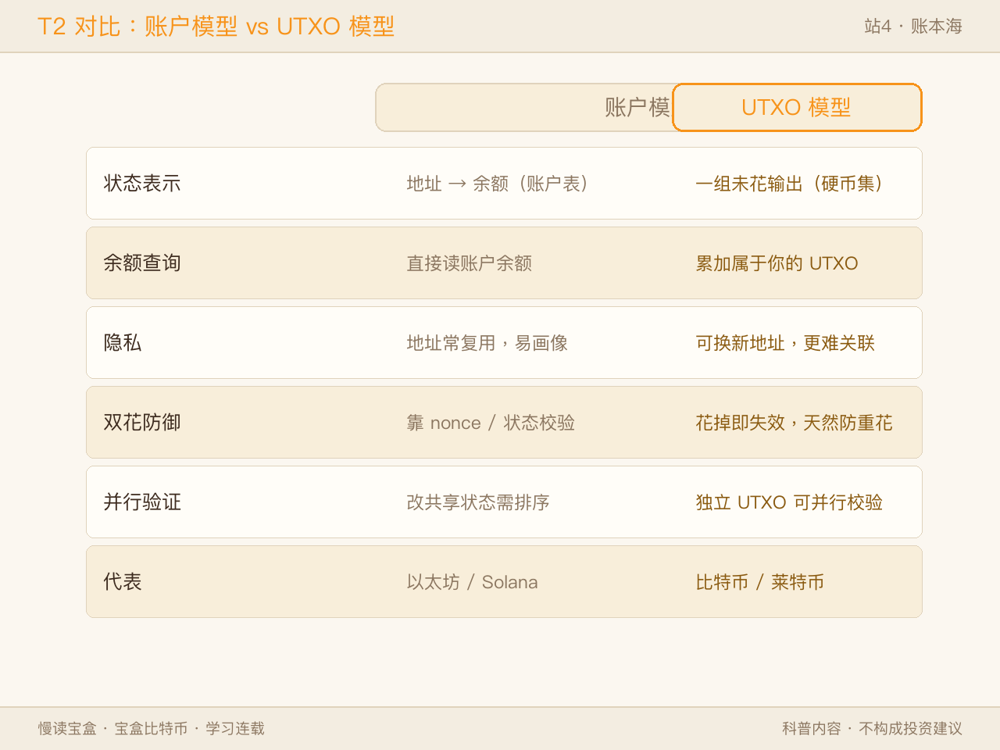
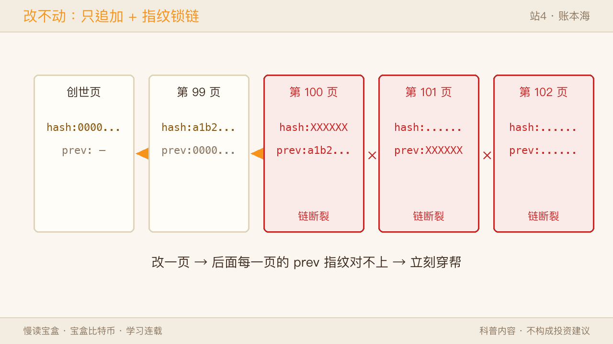
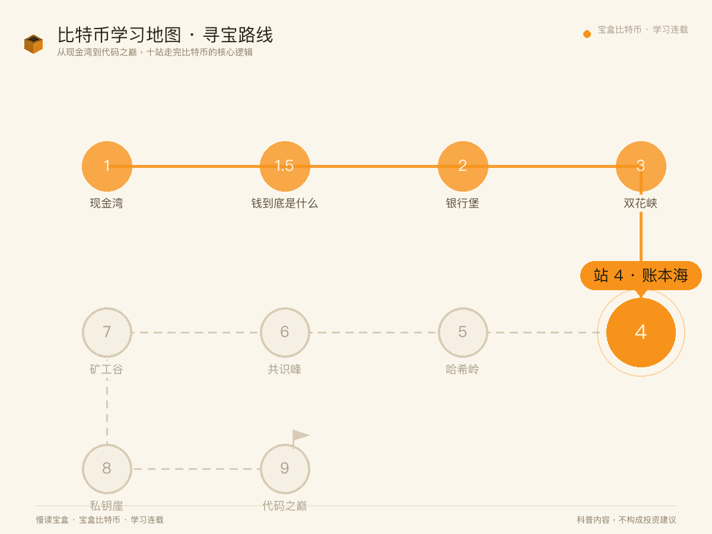
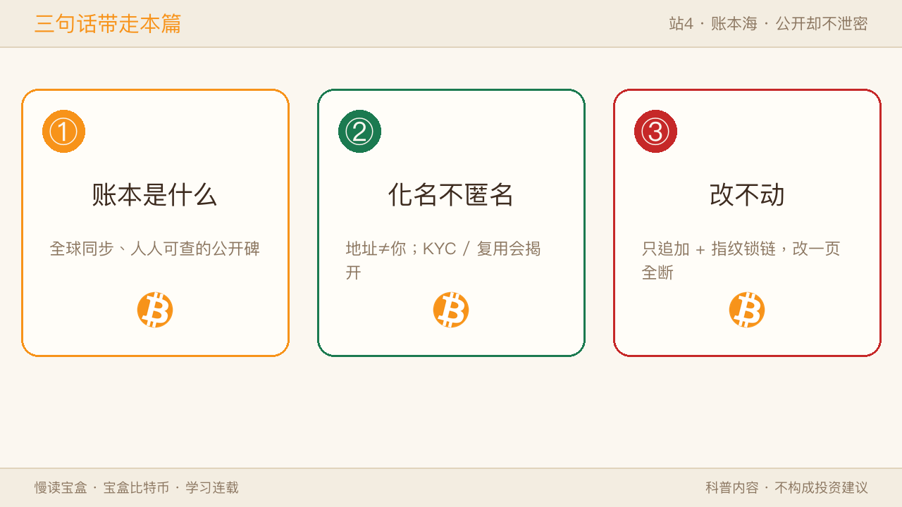

站3 双花峡我们看清：中本聪用「公开账本」挡住了双花。可「公开」这两个字，恰恰反直觉得让人犯嘀咕——你账上的每一笔钱，全世界都能查。那你的隐私呢？银行为什么能保密，比特币凭什么公开还不泄露？这一站「账本海」，过的就是这关。

一、账本海是什么：一本全球同步的账
把比特币的账本想象成一块立在广场上的大碑。它没有「存在某台服务器里的一张表」，而是「几万台电脑各自存了一份，实时对齐」。你转一笔币，这笔记录广播到全网，被记账节点收进「区块」，串成一条长链。任何一个人，不需要许可，打开就能查到从创世块到刚才那一笔的全部历史。
✅ 像的地方：就像小区公告栏，谁都能去读贴出来的通知。 ⚠️ 不一样的地方：公告栏由物业贴、物业也能撕；比特币账本是几万台电脑各存一份，没有谁能单方面把它拔电源、改内容。

双视角：用户视角——「我的钱在谁的账上？」系统视角——「不在任何人的账上，而在几万台电脑共同维护的那份副本里」。
T1 · 银行账本 vs 比特币公开账本
| 维度 | 银行账本 | 比特币公开账本 |
|---|---|---|
| 管理者 | 单一机构（内部账） | 全球分布式网络（无单点） |
| 可见性 | 仅本人 / 授权方 | 全网公开可查 |
| 可否篡改 | 管理员可直接改 | 数学上不可行（需重算整链） |
| 验证方式 | 信任机构 | 任何人独立验证 |
| 停机风险 | 服务器宕机即中断 | 永远在线（只要互联网在） |
| 一句类比 | 保险柜里的私密本 | 广场上同步的公开碑 |
二、公开却不泄密：地址 ≠ 你本人（伪匿名）
最反直觉的来了：账本公开给全世界看，你的隐私去哪了？
答案是「化名（pseudonym）」，不是「匿名（anonymous）」。账本上出现的不是「张三」，而是一串地址，比如 bc1q…。别人能看到「编号 A 给编号 B 转了 0.5 个币」，但看不到编号背后是谁。你本人和这串地址之间，没有天然绑定。

✅ 像的地方：就像图书馆借书证编号——别人看得到「编号 007 借了《三体》」，但不知道 007 是你。 ⚠️ 不一样的地方：借书证编号顶多查借阅记录；比特币地址一旦和你的真实身份被关联，后面所有的链上收支都能顺藤摸瓜。
双视角：用户视角——「别人能看到我多少钱、和谁交易？」技术真相——「能看到地址、金额、时间，看不到你是谁；可一旦交易所 KYC 实名、或你反复用同一地址收款，化名就破了」。
⚠️ 必须说清的红线：比特币是化名，不是匿名。它比银行透明（谁都能查账），但做不到「完全追查不到」。KYC 会把真名和地址缝到一起，链上分析也能溯源。比特币不可能用来避开监管——这点千万别误会。
三、没有「余额」这回事：UTXO 模型
这是理解比特币最绕、也最关键的一个弯。
你打开钱包看到「余额：0.8 BTC」，会以为背后有个账户表写着「地址 X → 0.8」。其实账本里根本没有「余额」字段，它只记「哪些『未花费的输出（UTXO）』现在属于你」。
把 UTXO 想成一枚枚带锁的硬币。你拥有的「钱」，不是屏幕上一个数字，而是你手里能用私钥打开的一堆硬币。你的「余额」= 这些硬币面值的总和。

你给别人转 0.3，系统不是从「账户」扣 0.3，而是：挑出你手里的硬币（比如一枚 0.5 的），把这枚消耗掉，生成两枚新硬币——一枚 0.3 给对方，一枚 0.2「找零」回到你的新地址。旧的 0.5 一旦花掉就永久失效，没法再花第二次。
✅ 像的地方：就像你掏 50 元现金、结一笔 30 元的账，递出整张、找回 20——花掉即离手。 ⚠️ 不一样的地方：现金谁拿都行；UTXO 靠你的签名才能解锁，不是谁捡到都能花。这一设计天然防双花：一笔钱是一枚硬币，花掉即销毁，不存在「同一笔同时付两人」。
T2 · 账户模型 vs UTXO 模型
| 维度 | 账户模型（如以太坊） | UTXO 模型（比特币） |
|---|---|---|
| 状态表示 | 地址 → 余额（账户表） | 一组未花输出（硬币集） |
| 余额查询 | 直接读账户余额 | 累加属于你的所有 UTXO |
| 隐私 | 地址常复用，易画像 | 每收一笔可换新地址，更难关联 |
| 双花防御 | 靠 nonce / 状态校验 | 输出花掉即失效，天然防重花 |
| 并行验证 | 改共享状态需排序 | 独立 UTXO 可并行校验 |
| 代表 | 以太坊 / Solana | 比特币 / 莱特币 |

一句话收住：账本海记的不是数字，是一堆带锁的硬币。
四、为什么改不动：只追加 + 指纹锁链
账本公开、人人可查，那有人偷偷把余额从 0.8 改成 80 呢？
招式一：只追加（append-only）。 账本只能往后写，不能改旧的。每一页都写着「上一页的指纹（哈希值）」。指纹有个脾气：内容变一点点，指纹就完全变样。你改了第 100 页的某一笔，第 100 页指纹就变；而第 101 页记着「上一页指纹 = 旧值」，对不上，第 101 页及之后整条链全部断裂。
招式二：要修复断裂，得重算整条链。 想让篡改看起来合法，你得把第 100 页之后的每一页都重新算一遍哈希、重新打包，并且在全网抢先广播，让其他节点接受你的「假账本」。这需要掌握全网约一半以上的算力（所谓 51% 攻击），成本大到不划算——老老实实记账（挖矿拿奖励）反而更赚。

✅ 像的地方：像装订成册的账本盖了骑缝章，撕一页重贴就露馅。 ⚠️ 不一样的地方：骑缝章靠人眼；比特币靠数学——改的代价远超回报，老实记账反而更划算。想修复断裂、让假账本被全网接受，得掌握过半算力（51% 攻击），成本天文数字。
五、回到地图（启下）
回到这张 10 站学习地图——站 1 现金湾见了比特币是什么；站 1.5 先把「钱到底是什么」想清楚；站 2 银行堡看清它要取代什么；站 3 双花峡看它怎么在没有银行时按住双花；本站 账本海，我们看它用什么承载这笔账：一本全球同步、公开却不泄密、改不动的账。

三句话带走本篇：
